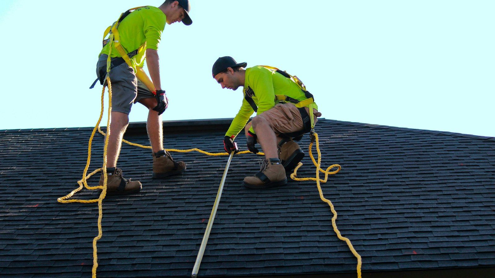

Drive down almost any street in St. Pete and you'll see them: dark, almost black streaks running down a shingle roof, usually heaviest on the north side where the sun doesn't hit as hard. We get asked about them all the time. "Is my roof dirty?" "Is it rotting?" "Do I need a new one?"
Most of the time the answer is none of the above. Those streaks are algae.
What's actually growing up there
The culprit has a name, Gloeocapsa magma, and it loves exactly what we have in Tampa Bay: heat, humidity and a lot of rain. The spores travel on the wind, so once one house on the block has it, the neighbors usually follow. It settles in where water drains and lingers, and it actually feeds on the limestone filler that's in a lot of asphalt shingles. As it grows, it develops a dark outer coating to protect itself from the sun. That's the black you're seeing.
Is it hurting my roof?
Early on, it's mostly cosmetic. But it doesn't stay that way forever. Algae and the moss and lichen that sometimes move in behind it hold moisture against the shingle, and a roof that never fully dries out wears faster. It also makes a perfectly good roof look tired, which matters if you're trying to sell your home, and some HOAs will send a letter about it.
Please don't pressure wash it
This is the one we really want people to hear. A pressure washer will take the streaks off, and it will also take the protective granules off with them. Those granules are what shield the asphalt from the Florida sun. Strip them away and you can shorten the life of the roof by years in an afternoon. We've seen it more than once.
If a roof is still in good shape, a gentle soft wash with the right cleaner can help. Just know the algae usually comes back, because nothing about the shingle itself has changed.

The shingle we put on instead
When a roof is due for replacement, one of the shingles we install most is the Atlas Pinnacle line with Scotchgard Protector. The algae resistance is built into the shingle's granules, so it's working on the roof every day instead of being something you have to remember to do. Atlas backs it with its own algae-resistance warranty, and we're happy to walk you through what that covers for the specific shingle and color you pick.
A few other reasons we like it for homes around here:
- It's an architectural (dimensional) shingle, so it has depth and shadow lines instead of looking flat.
- It carries a 130 MPH wind rating when it's installed to Atlas's specifications, which is how we install every roof.
- Because it resists streaking, you're not limited to dark colors. Plenty of people pick a darker shingle just to hide algae. A lighter color reflects more heat, and that's a real difference in a Florida attic in August.
Keep the roof drying out
No shingle makes a roof maintenance-free. Trimming back branches that shade the roof and drop leaves, and keeping gutters clear so water doesn't sit along the edges, both help any roof stay dry and clean longer.
Already have streaks?
Give us a call. We'll come out, take a look, and tell you honestly whether it's something that can be cleaned or whether the roof is getting close to the end of its life anyway. If it's the first one, we'll say so. If you do end up needing a new roof, you'll know exactly why we recommend what we do.
Wondering whether your streaks can be cleaned or your roof is due?
Get a free roof inspection